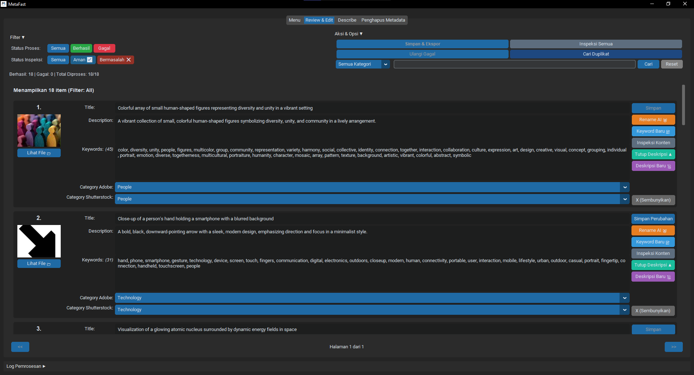
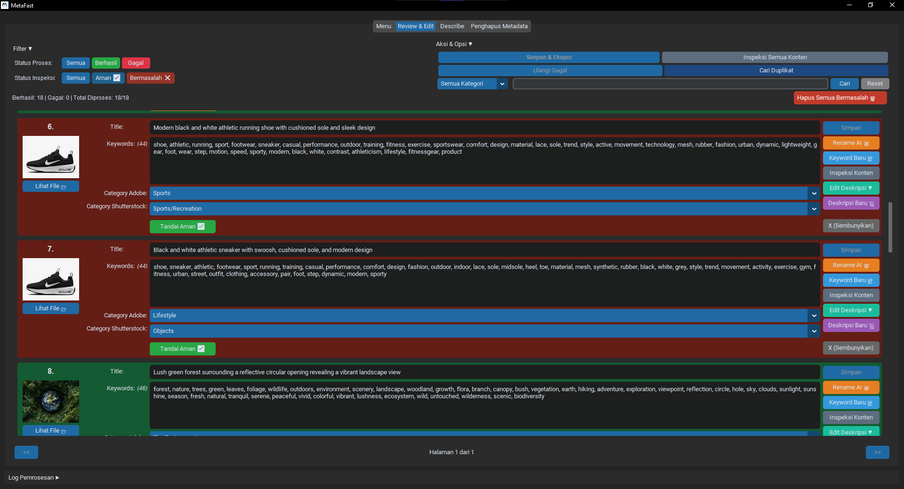
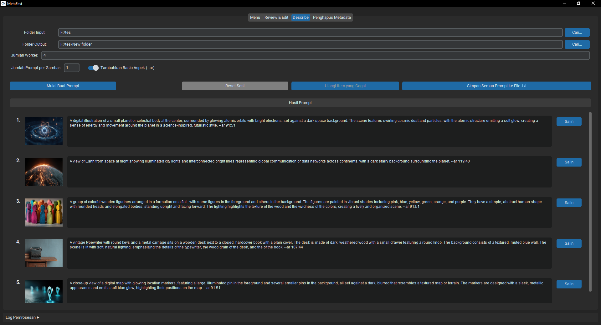
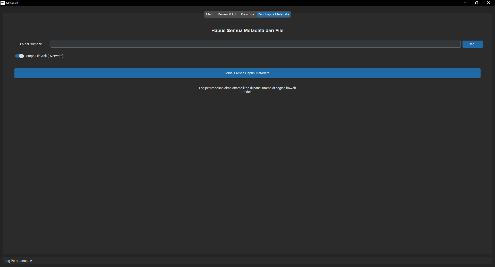

Hasil AI langsung siap dicek
Judul, kata kunci, dan deskripsi tidak berhenti di hasil awal saja. Semuanya masuk ke alur yang memudahkan kamu cek dan rapikan sebelum aset dianggap siap.
MetaFast cocok untuk kreator yang ngurus aset banyak dan ingin proses metadata yang lebih cepat, lebih tertata, dan lebih gampang dipegang. Dari gambar, video, sampai vektor, semuanya bisa kamu urus di satu aplikasi desktop tanpa bolak-balik alat.

Kenapa MetaFast terasa beda
MetaFast dibuat supaya manfaatnya langsung kerasa. Dari awal kamu bisa paham ini dipakai buat apa, tanpa harus nebak-nebak cara kerjanya.
Judul, kata kunci, dan deskripsi tidak berhenti di hasil awal saja. Semuanya masuk ke alur yang memudahkan kamu cek dan rapikan sebelum aset dianggap siap.
Kamu tetap bisa atur kata kunci, ubah urutannya, pilih kategori, dan menyesuaikan hasil sesuai kebutuhan pasar dan gaya kerja kamu sendiri.
Saat aset mulai banyak, kerja manual biasanya mulai terasa capek. MetaFast bantu lewat pemantauan folder, proses koleksi, dan alur lanjutan supaya kerja berulang jadi lebih tertata.
Pemeriksaan kualitas, deteksi duplikat, pembersihan metadata, dan data pendukung membantu mengurangi revisi yang biasanya baru ketahuan setelah aset telanjur lanjut.
Masukkan gambar, video, atau vektor ke satu tempat kerja yang sama tanpa pindah-pindah aplikasi.
Biarkan AI menyiapkan metadata awal, lalu cek hasilnya di panel yang enak dipakai buat koreksi cepat.
Atur ulang kata kunci, cek isi aset, saring masalah kualitas, lalu pastikan semuanya siap lanjut.
Simpan hasil, siapkan data pendukung, lanjutkan pekerjaan, atau jalankan proses otomatis tanpa mulai dari nol lagi.
Fitur utama
Bagian ini dibuat lebih lengkap supaya kamu bisa langsung lihat fungsi MetaFast, manfaat utamanya, dan fitur mana yang paling cocok buat kerja harianmu.
MetaFast kasih ruang buat cek hasil dengan lebih nyaman. Kamu bisa lihat judul, urutan kata kunci, deskripsi, dan kategori, lalu putuskan sendiri kapan hasilnya sudah siap.

Di kerja stock, cepat saja belum cukup. MetaFast bantu kasih lapisan cek tambahan supaya aset yang lanjut tetap lebih terjaga, terutama kalau koleksinya besar dan banyak yang mirip.

Buat kreator yang kerja dengan bantuan AI, ide baru sering lahir dari aset yang sudah ada. Fitur ini bantu ubah visual lama jadi arahan yang lebih siap dipakai buat lanjut eksplorasi.

Kadang masalah sudah muncul bahkan sebelum metadata mulai disusun. MetaFast bantu lewat pembersihan metadata lama dan utilitas lain supaya aset masuk ke proses dalam kondisi yang lebih rapi.
Siapkan judul, kata kunci, dan deskripsi awal lebih cepat dari satu tempat kerja yang sama.
Kerja banyak aset sekaligus tanpa kehilangan jejak proses dan hasil tiap file.
Biarkan aset baru masuk ke alur yang sudah kamu siapkan tanpa ditambah manual satu per satu.
Bantu tandai aset yang terlalu mirip supaya koleksi tetap rapi dan seleksi lebih gampang.
Bantu lihat potensi masalah kualitas sebelum aset keburu lanjut terlalu jauh.
Siapkan data yang dibutuhkan untuk langkah lanjut dengan lebih rapi.
Ubah urutan keyword, hapus istilah yang kurang pas, dan rapikan hasil sesuai kebutuhan.
Lanjut kapan saja tanpa kehilangan konteks saat proses harus berhenti di tengah jalan.
Keunggulan utama
Fokusnya sederhana: semua proses penting dikumpulkan di satu tempat supaya susun metadata, cek hasil, jaga kualitas, dan lanjut distribusi terasa lebih rapi.
MetaFast
MetaFast menyatukan kebutuhan utama dan kebutuhan lanjut di satu tempat, jadi kamu tidak perlu pecah kerja metadata ke banyak aplikasi.
Harga tetap
Semua harga ditampilkan dalam Rupiah. Pilih durasi yang paling sesuai dengan kebutuhan, lalu selesaikan pembayaran dengan aman melalui Midtrans.
MetaFast
Produk yang dijual
Metode pembayaran
Setelah memilih paket, pelanggan dapat melanjutkan pembayaran melalui Midtrans dengan QRIS, transfer bank, virtual account, atau e-wallet yang tersedia.
Alur pembayaran
Di bawah ini adalah tahapan pembelian mulai dari memilih paket hingga lisensi diterima melalui email.
Pelanggan membuka halaman harga, membaca detail paket, lalu memilih durasi langganan MetaFast sesuai kebutuhan.
Pelanggan mengisi nama lengkap dan email aktif, lalu memeriksa kembali paket yang dipilih sebelum melanjutkan pembayaran.
Pelanggan memilih cara pembayaran yang tersedia di Midtrans, seperti QRIS, transfer bank, virtual account, atau e-wallet.
Setelah pembayaran dikonfirmasi, lisensi dikirim ke email dan dapat langsung digunakan di aplikasi desktop MetaFast.
Cerita penggunaan
Biar lebih kebayang, ini beberapa cerita yang terasa dekat dengan cara kerja pengguna stock yang beda-beda.
"Dulu saya bolak-balik buka banyak jendela cuma buat beresin satu batch. Sekarang rasanya lebih enteng. Kerjaan tetap jalan, kepala juga tidak cepat penuh."
Nadira Aulia Microstocker foto komersial"Bagian review keyword-nya enak dipakai. Saya bisa atur prioritas istilah yang paling penting tanpa ribet pindah layar, jadi hasil editorialnya terasa lebih pas."
Raka Pradana Kontributor editorial"Yang saya apresiasi, aset vektor tidak lagi berjalan sendiri. Dari pratinjau, file EPS, hingga data pendukung, semuanya masuk ke alur yang sama dan lebih mudah diawasi."
Salsa Maheswari Ilustrator vektor microstock"Yang paling saya suka, file baru tinggal masuk ke alur yang sudah saya set. Jadi saya bisa fokus produksi, sementara urusan rutinnya tidak perlu diulang dari nol terus."
Dimas Alfarez Produser koleksi harian"Fitur pemeriksaan konten dan pencari duplikat membantu sekali di tahap seleksi. Tim kami jadi lebih tenang karena aset yang kurang layak bisa disaring sebelum masuk distribusi akhir."
Fikri Ramadhan Koordinator studio microstock"Buat saya ini bukan cuma alat otomatis. Lebih terasa seperti meja kerja metadata yang bikin proses ngebut, tapi keputusan akhirnya tetap aman di tangan kita."
Keanu Prasetyo Creative operator aset stock"Sesudah pindah ke MetaFast, alurnya terasa lebih nyambung. Aset, keyword, dan data pendukung jadi lebih sinkron saat harus saya bawa ke beberapa marketplace sekaligus."
Alea Putri Kontributor multi-platform"Kalau lagi cari ide lanjutan dari aset yang performanya bagus, fitur arahan visual ini kepakai banget. Eksplorasinya jadi lebih cepat, tapi tetap ada arah yang jelas."
Zivana Ayesha Kreator visual berbasis AI"Saya lumayan sering lanjut kerja malam atau besok paginya. Fitur melanjutkan pekerjaan ini simpel, tapi kerasa banget manfaatnya karena konteks prosesnya tetap kebawa."
Bagas Elvano Operator produksi aset bertahapPertanyaan yang sering ditanya
MetaFast adalah aplikasi desktop untuk bantu beresin metadata aset stock lebih cepat. Di dalamnya ada penyusunan metadata dengan AI, ruang cek manual, pengaturan kata kunci, pemeriksaan aset, ekspor data pendukung, dan fitur lain buat bantu proses kerja.
Tidak. MetaFast bisa dipakai untuk gambar, video, dan aset vektor yang umum dipakai kreator stock. Jadi walau jenis asetmu campur, prosesnya tetap bisa jalan di alur yang sama.
Bisa. Justru itu salah satu bagian pentingnya. Hasil AI dipakai sebagai titik awal yang cepat, lalu kamu tetap bisa cek, ubah, susun ulang, dan finalkan sendiri.
MetaFast cocok untuk kontributor stock, studio kreatif kecil, pengelola koleksi besar, dan tim produksi aset yang ingin proses metadata lebih rapi. Manfaatnya paling terasa saat aset mulai banyak dan kerja manual sudah terasa melelahkan.
Iya. MetaFast bekerja dengan menghubungkan aset kamu ke layanan AI pilihanmu. Dengan akses sendiri, kamu jadi lebih jelas dalam mengatur hasil dan biayanya.
Tidak. Proses MetaFast tetap berpusat di komputer kamu. File asli tidak dipindah ke server MetaFast untuk disimpan seperti perpustakaan cloud, jadi alurnya tetap lokal dan lebih gampang kamu pegang.
Unduh aplikasi
MetaFast cocok buat pengguna yang ingin satu tempat untuk susun metadata, cek hasil, jaga kualitas koleksi, dan menyiapkan aset sampai siap lanjut.
Minimum
Lebih nyaman kalau
Langkah berikutnya
MetaFast dibuat buat kreator yang tidak mau terlalu banyak energi habis di pekerjaan metadata yang itu-itu saja. Pilih paketnya, unduh aplikasinya, lalu mulai bangun alur kerja yang lebih enak dari desktop kamu sendiri.